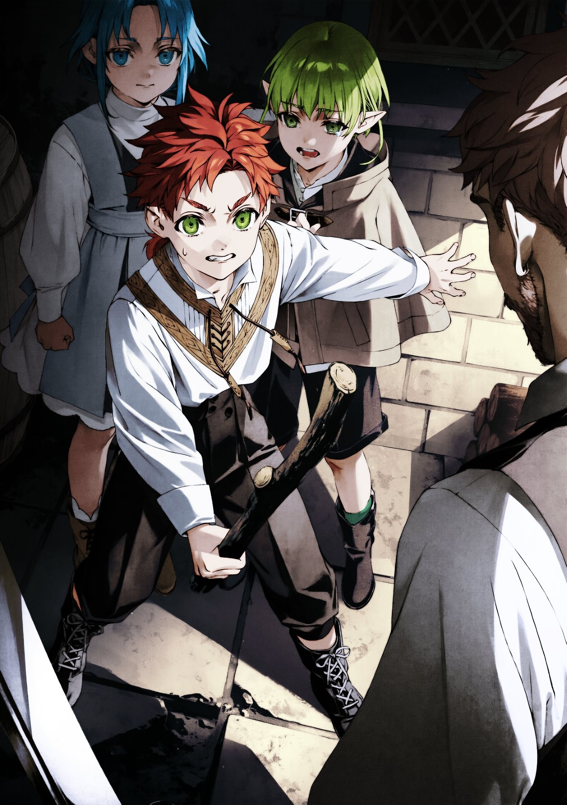

Arus’un kendi başına takılmaya karar vermesine sebep olan şey resmen can sıkıntısıydı. Şehre ulaştıklarında, gözüne ilk çarpan şey koskocaman kulelerdi. Beyaz Anne’ye göre bunlar devasa büyülü aygıtlardı ve Millishion’un tüm yıl boyunca yaşayacak kadar rahat olmasını onlara borçluydunuz. Bir de büyük, parıldayan gümüş renkli bir bina vardı. Kırmızı Anne de oranın Maceracılar Loncasının merkezi olduğunu ve çoğu maceracının oraya en az bir kere gittiğini söylemişti. Arus, o kuleleri ve gümüş binayı yakından görmeyi çok istiyordu.
Aslında babasına söylese, onu götürürdü. O gün mesela, Arus parlak altın binayı görmek istediğini söylemişti, babası da gayet keyifle kabul edip onu oraya götürmüştü. Ama oraya varınca, Arus istediği gibi dolaşamadı. İçeri girdiklerinde Arus etrafı keşfetmek için koşturmaya heveslendi ama babası onu durdurup, “Bunu yapma” veya “Oraya giremezsin” diye uyardı. Bu kısıtlamalar, Arus’un canını fazlasıyla sıkmıştı.
Arus’un bilmediği şey, Rudeus’un Millis Kilisesi’nin merkezine saygılı davranmaya çalıştığıydı. Burası kilisenin katedraliydi ve özellikle iç kısma izinsiz girilmezdi. Hele meraklı bir çocuğun sağa sola koşturmak isteyeceği bir yer hiç değildi.
Arus hâlâ çocuktan farksızdı ve böyle kuralların ne kadar önemli olduğunu bilmiyordu. Kuleleri ya da gümüş binayı gezmek istediğini söylese, babası yine götürürdü. Ama Arus’un mantığı basitti—babasıyla gittiğinde hep bir sınır konuyor, o da gene kısıtlanmış hissediyordu.
Babası ve diğerleri, büyük göğüslü ve sıkı korunan bir kadınla birlikte altın binanın merkezine geçip çocuklara iç bahçede oynamalarını söylediklerinde, Arus işte o an fırsatı yakaladı. Ben gidip şu parlak gümüş binayı ve kuleleri yakından göreceğim diye düşündü. Şöyle bir bakınca da aslında hayatı boyunca anne babasının onu sürekli engellediğini fark etti. “Oraya gitme, buraya gitme, şehirde tek başına dolaşma.” Hep aynı laflar.
Ne zaman dışarı oynamaya çıksa, yanında Aisha veya Leo olurdu. Küçükken uslu uslu uyuyordu bu kurallara. Hemen bir asiye dönüşecek hali de yoktu tabii. Annesinin söylediklerini tam anlamasa bile, o talimatlara uymanın önemli olduğunu biliyordu. Yalnız başına dolaşmaması gerektiğini, dünyanın tehlikelerle dolu olduğunu anlamıştı. Aslında Aisha’yla dışarı çıkmaktan genelde rahatsız olmazdı, ama bazen de birilerinin gözünün sürekli üzerinde olmadığı şeyler yapmak istiyordu.
“Hey Lara, şu parlak gümüş binayla kulelere doğru gidelim mi ne dersin?” diye sordu Arus, yanına bir ortak alması gerektiğini düşünerek. O gün garip bir şekilde Lara tek başına takılıyordu. Leo bir yerlere gitmişti—kutsanmış çocuk dedikleri kadını koruyan beyaz baykuş muhafız yaratıkla konuşmaya falan gitmiş olabilirdi.
Lara da bu durumu fırsat bildi. Küçüklüğünden beri Leo’yla çok iyi anlaşırlardı ama Leo’nun her hareketini kontrol ediyor gibi davranmasından bıkmıştı. O yüzden Arus ona bu teklifi yapınca, ağzının kenarı hafifçe yukarı kıvrıldı ve başını salladı.
“Ben de onu düşünüyordum.”
Aisha’nın gözü onlarda değilken beklediler, sonra ikisi usulca sıvışıp planı uygulamaya başladılar. Chris “Baba gitti!” diye ağlayıp ortalığı velveleye verince, tam da o kargaşadan yararlanıp çalıların arasına daldılar. Sonra yaprakların arasında saklanarak çıkışa yöneldiler—ama Sieg’e yakalandılar.
“Nereye gidiyorsunuz?” diye sordu Sieg.
“Sadece biraz dışarı çıkacağız, Sieg.” dedi Arus.
Sieg’in suratı asıldı. “Bir yetişkin olmadan dışarı çıkarsanız başınız belaya girer.”
Arus da hemen lafı yapıştırdı: “Kendin son zamanlarda tek başına gizlice arkaya kaçıp duruyorsun. Bizim bilmediğimizi mi sanıyorsun?”
“Ş-şey, öyle bir şey yapmıyorum…”
Arus her şeyi gayet iyi biliyordu. Sieg her fırsatta tek başına dışarı sızardı ve nedense onun başı hiç belaya girmezdi! Bunun, Aisha veya Leo’nun onu göz hapsine almıyor olmasıyla ilgili olduğunu düşünüyordu. Küçük kardeşinin dilediği gibi girip çıkabilmesi onu sinir ediyordu.
Gerçekte ise Sieg tek başına değildi. Arus’un da, Sieg’in de haberi olmadan, Sieg arka kapıdan tek başına çıkarken gölgelerden onu gözetleyen Ruquag paralı askerleri vardı. Her daim tedirgin Rudeus’un talimatlarını yerine getiriyorlardı.
Arus, Sieg’e “Sırrını saklıyorum,” dedi, “o yüzden sen de bizim hakkımızda ağzını sıkı tut.”
“Tamam, peki…” diye mırıldandı Sieg.
Arus omuz silkti. “Çok önemli bir şey değil ki. Sadece şu parlak gümüş bina ile devasa kuleyi görmeye gideceğiz.”
“Ha? Maceracılar Loncası’na mı gideceksiniz?” Sieg’in gözleri bir anda parladı. Alec ona kahramanlarla ilgili bir sürü hikâye anlatmıştı ve bu hikâyelerde Maceracılar Loncasının merkezi de sık sık geçiyordu. O zamandan beri orayı merak ediyordu.
“Evet,” dedi Arus.
Sieg “Ben de geliyorum!” diye atıldı.
Böylece Arus ve kardeşleri, içlerinde kocaman bir merak ve biraz da yaramazlık hevesiyle Millis Katedrali’nden dışarı adım attılar.
***
Arus, Sieg ve Lara’yı peşine takıp şehirde dolaşmaya koyuldu. Sharia’dakilere hiç benzemeyen evler ve daha önce görmediği tarzlarda inşa edilmiş binalar kalbinin hızla çarpmasına sebep oluyordu. Arabada giderken şehri incelemişti ama kendi ayaklarıyla sokaklarda dolaşmak bambaşkaydı. Nedenini tam açıklayamazdı—belki de taş döşemelerdeki desenlerdi.
Her neyse, bilmediği bir şehirde dolaşmak heyecan vericiydi; ama üç çocuğun tek başına ortalıkta gezindiğini görenler onlara meraklı gözlerle bakmadan edemiyordu—özellikle de Sieg ve onun yeşil saçlarına. Arus’a göre sorun değildi bu bakışlar. Sharia’da da insanların onlara bakmasına alışmıştı.
“Lara, önüne baksana,” dedi. “Tehlikeli.”
“Mm,” diye karşılık verdi Lara, gözleri çevredeki her şeye hayranlıkla parlıyor. Düzenli ve temiz bu şehre, Arus’tan bile daha fazla büyülenmiş gibi görünüyordu.
“Hey, Lucie’yi niye davet etmedik?” diye atıldı Sieg. “Bize dışladık diye kızacak şimdi.”
“Yok ya, Lucie gelmezdi ki.”
Sieg her zamanki gibi biraz ürkek davranıyordu. Son zamanlarda gizli gizli kılıç eğitimi yaptığı için epey gelişmişti ama hâlâ bu kadar tedirgin olmasına Arus anlam veremiyordu.
“Hey Lara! Şu nedir?” diye sordu Arus, garip bir nesneyi işaret ederek. Daha önce altın binada gördükleri büyük beyaz baykuşa benzeyen bir baykuş heykeliydi, ama bariz şekilde gerçek değildi. Biraz da tuhaf duruyordu.
Lara kısaca göz atıp kendinden emin bir şekilde, “O bir çeşme,” dedi.
“Kim öyle garip bir çeşme yapar ki?”
Lara omuz silkti. “Evet, öyle işte.”
“Hadi ya, hiç öyle çeşme mi olur?” Arus tam bunu demişken, baykuş heykelinden su fışkırmaya başladı. “Vay canına, bayağı da çeşmeymiş! Yok artık! Bunu nasıl anladın ki?!”
“Julie’nin evinde buna benzeyen bir tane görmüştüm.”
Böylece Arus ve kardeşleri, merakla dolu yürekleri ve ufak tefek yaramazlık hevesleriyle, Millis Katedrali’nden uzaklaşarak şehri keşfetmeye devam ettiler.
Rudeus’un “yan ürünlerinden” biriydi bu çeşme; esin kaynağı ise Singapur Merlion’uydu. Kutsanmış Çocuk’un koruyucu yaratığı şeklinde tasarlamış, bittikten sonra da ona hediye etmişti. Sonra bunu kilisenin içinde nereye koyacaklarını bilememişlerdi—daha doğrusu, Kutsanmış Çocuk, tüyleri yüzülmüş bir baykuşu andırıyor diye sevmediğinden onu yakınında istememişti. En sonunda da kilisenin yakınındaki bir sokakta, gelip geçenleri eğlendiren bir süs olarak yerini buldu.
“Vay be…”
Lara, Arus ve Sieg’in şaşkın bakışlarını hafif bir gururla karşıladı; üçü beraber köprüyü geçerken onlara kıkırdadı. Karşı tarafa ulaştıklarında ise etrafları bir anda değişti. Binalar küçülmüş, sokaklardaki insan sayısı artmıştı. Çoğunun elinde kılıçlar, üstünde zırhlar vardı; Arus onlara bakınca daha kaslı, daha haşin tipler gördüğünü düşünüyordu. Bu da demek oluyordu ki İlahi Bölge’den çıkıp Maceracılar Bölgesi’ne gelmişlerdi!
“Buralar daha normal, değil mi?”
“Evet.”
Büyü Şehri Sharia’da yaşayan Arus ve diğerleri için bu tarz bir yer kendilerini daha çok evde hissettiriyordu. Öfkeli suratlı, kaslı tipler bile Ruquag paralı askerlerinin yanında narin çiçek gibi kalıyordu—Kırmızı Anne’yle kıyaslamaya zaten gerek yoktu!
“Hey Lara, şu gümüş bina hangi taraftaydı?”
“Hmm. Şu yönde.”
“Süper, öyleyse hadi gidelim!” diye coşkuyla öne atıldı Arus. Arkasında, heyecanlı gözüken Sieg ve yüzünde gülümseme olsa da sıkılmış gibi duran Lara ilerliyordu.
“Vay canına, müthiş!” dedi Arus, Sieg de ona katılarak aynısını yineledi.
Önlerinde gümüş gibi parıldayan, kocaman bir bina duruyordu. Ana caddeye varmışlar ve Maceracılar Loncası’yla karşılaşmışlardı. Cadde doğrudan oraya uzandığı için, binayı görmemek imkânsızdı zaten.
“Hadi, Arus, hadi!” diye seslendi Sieg, heyecanla koşmaya başlayarak. Bundan birkaç dakika önce bu fikre tamamen karşı olduğuna inanmak zordu doğrusu. Ne derse desin, bu kadar çok kahramanlık destanının başladığı yer olan Maceracılar Loncası’nın cazibesine karşı koyamıyordu.
“Hey, bekle!” diye seslendi Arus; o ve Lara da heyecanla Sieg’in peşine takıldılar. Orayı yakından görmeyi sabırsızlıkla bekliyorlardı.
Üç çocuğun bir anda koşmaya başladığını gören çevredeki insanlar, bunun tehlikeli olabileceğini düşündü. Aniden koşan çocuklar birine çarpabilir ya da at arabalarının tekerlekleri altında kalabilirdi. Ama endişeleri çabucak yatıştı, çünkü bu üçlü kalabalığın arasından aynı hızla ve kontrollü biçimde geçiyordu, diğer çocuklara hiç benzemiyorlardı. Üstelik at arabalarının geçmediği caddenin kenarında kalmayı da ihmal etmiyorlardı. Günlük antrenmanlarının faydasını gördükleri kesindi.
Sieg, loncanın girişindeki merdivenlere vardığında tekrar şaşkınlıkla hayranlığını dile getirdi. Böylesine büyük ve gösterişli bir bina görmemişti. Gerçi bu tam olarak doğru sayılmazdı; Büyü Şehri Sharia’daki büyü üniversitesi de epey büyüktü ama aynı şey değildi işte! Maceracılar Loncası’nın merkezi gümüş gibi parlıyor, ışıl ışıl duruyordu; oysa büyü üniversitesi patates renginde kırmızı ve kahverengi tonlarındaydı.
“Burası Maceracılar Loncası mı, ha, Arus!”
“Evet!”
“Evimizin yakınındakine hiç benzemiyor!”
“Evet, bizimkisi neredeyse yıkılacak gibi duruyor!”
“Ama ikisi de pis kokuyor aslında.”
“Valla kokuyor, di mi?”
Bu laubali yorumlarla birlikte üçü de girişi fazla ses çıkarmadan geçerek loncanın kapısını ittiler. Mavi Anne onlara, loncaya girip çıkan çocuklara kavgacı ve kalın kafalı maceracıların musallat olabileceğini söylemişti. Arus, bir kavga olsa memnuniyetle atlayacaktı ama izinsiz kaçıp geldikten sonra iş çıkarması Kızıl Anne’yi kesin kızdırırdı. Kızıl Anne kızınca bayağı korkutucu oluyordu! Poposunu kıpkırmızı olana kadar pataklardı. Hem Sieg’le Lara da incinseydi, Kızıl Anne’den başka Mavi Anne’yle Beyaz Anne de ona çok fena öfkelenirdi…
Bu düşünce, Arus’un tüylerini diken diken etti.
Öte yandan, babasının ona sinirlenebileceği fikri, içten içe onu kavgaya girmeye kışkırtmıyor da değildi. Babası genelde onu ödüllendirip şımartırdı ama pek az azar çekmişti Arus’a. Babasının gerçekten öfkelendiğini hiç görmemişti.
“Vay be!” dedi Arus, etrafa bakınırken. Maceracılar Loncası’nın içi, dışından hayal ettiğinden de ihtişamlıydı. Dekorasyon eski tarz ama gösterişliydi ve bir sürü kayıt masası vardı. Buradaki maceracıların sayısı evdekinden katbekat fazlaydı; hem de hepsi bambaşka kıyafetler giyiyordu. Sharia’daki Maceracılar Loncası yeni yetme büyücülerle tecrübeli savaşçılar ve şifacılarla doluydu. Millis’te ise işler tam tersiydi.
“Arus,” diye seslendi Lara, Arus etrafı seyre dalmışken. “Dört katın olduğunu söylüyor.” Merdivenlerin önündeki bilgi panosunu işaret etti. Haklıydı! Birinci katta kayıt ve bekleme alanı, ikinci katta malzemelerle birlikte silah ve ekipman satan lonca dükkânı, üçüncü katta hafif yiyecek içecek servisi yapan bir restoran, dördüncü katta ise büyük klanlara ait odalar vardı.
“Hadi yukarı çıkalım!” dedi Arus, merdivenlere doğru hevesle yönelirken. Tam o sırada üzerlerine bir gölge düştü. Başını kaldırıp baktığında, kalın makyajı bulunan ve oldukça büyük göğüsleri olan bir kadın gördü.
“Burası bir oyun alanı değil,” dedi kadın. “Burada ne yapıyorsunuz?”
“Ş-şey, biz turist gibi geziyoruz!” diye atıldı Arus, babasının kendisine söylediklerini tekrarlayarak. “Ranoa’dan geldik.”
“Aileniz nerede peki?”
“Şey, yani… Sadece biz geldik.”
“Öyle mi?” dedi kadın. “O zaman ne dersiniz, size ben biraz burayı gezdireyim? Görünüşe aldanmayın—burada çalışıyorum, öğlene kadar da boşum. Ne diyorsunuz?” Omzundaki yamayı gösterdi. Resepsiyondaki görevlilerdekinin aynısıydı.
“Ş-şahane olur!” dedi Arus, nefesi kesilecek gibi hissederek. Arus büyük göğüsleri çok severdi. Küçük göğüslerden de hoşlanmıyor değildi ama en çok büyük göğüslerden etkilendiği kesindi. Karşısındaki kadının göğüsleri Aisha’nınkiler kadar büyüktü—Arus’un yüreğini gümbür gümbür attırmaya yetecek kadar!
“Süper, o halde size ben bakarım. Hazır mısınız? Birinci kat kayıt alanıdır.” Kadın onlara sıcacık bir gülümseme attı ve rehberliğe başladı. Üçü de onu takip ederek lonca binasını gezmeye koyuldular. Birinci kattan ikinci kata, oradan üçüncüye, sonra da dördüncü kata çıktılar. Tüm bu süre boyunca kadın, onlarla yetişkinmiş gibi kibar ve detaylı bir şekilde ilgilendi.
Arus aslında kafasına göre gezmek istiyordu ama kendilerini rehberli bir turda bulmuşlardı. Planladığı şey bu değildi fakat gördükleri her şey yeni ve acayip heyecan vericiydi. Özellikle klan odası, Sharia’daki Maceracılar Loncası’nda olmayan bir şeydi ve öyle gösterişli süslenmişti ki, maceracılara ait olduğuna inanmak zordu. Bu bile Arus ve diğerlerinin içini kıpır kıpır etmeye yetmişti.
Bütün binayı dolaştıktan sonra, kadın onlara dönüp “İşte bu kadar,” dedi. Ardından Arus’un yanına eğildi: “Eğlendin mi?”
“Evet! Çok teşekkür ederim!”
“Teşekküre gerek yok, Peki şimdi ne yapacaksın? Annen ya da baban gelip seni alacak mı?”
“Şey, hayır…”
“Öyle mi? O zaman seni eve ben bırakayım mı?”
Arus “Yok, sağ ol. Biz kendimiz döneriz!” dedi. Çünkü hâlâ kuleleri görmek istiyordu. Eve bırakılacaklarını söyleyip sonra şehrin dış mahallelerine doğru yürüseler, kadın mutlaka fark ederdi. Arus, aklındaki o son yeri görmeden eve dönmeye hiç niyetli değildi.
Böylece Arus ve kardeşleri loncadan ayrıldılar. Planlarından biraz sapmışlardı ama yine de oldukça eğlenceli geçmişti.
Arus ufukta, öğleden sonrası güneşinin batmaya doğru hafifçe eğildiğini görüp kuleyi işaret ederek coşkuyla “Hadi, sıradaki yere!” diye bağırdı.
***
Kuleye giden yolda türlü türlü çeşitli şeylerle karşılaştılar. Önce, içinden ufak teknelerin geçtiği karmaşık bir kanal ağı gördüler. Ardından, canavarlardan elde edilen malzemelerle tepeleme doldurulmuş arabalar ve onlara eşlik ederek koruyan maceracı gruplarıyla karşılaştılar.
Üç kardeş, her yeni şey gördüklerinde hayranlıkla “Vay be!” diye iç geçiriyor ve etrafa bakınmanın tadını doya doya çıkarıyordu. Ancak ya bu kadar çok şey görmeye vakit ayırdıkları için ya da başta yakın gibi görünen kule beklenmedik derecede uzakta olduğu için, kuleye vardıklarında akşam iyice çökmüştü.
Arus, kuleye bakıp “Vay canına, bu da kocamanmış!” diye seslendi. Gün batımının ışığında, kuleyi yakından gören üçü de hayretler içinde kalmıştı. Çocukların etrafını dolaşmasının dakikalar süreceği kadar geniş bir sütun gibi uzanıyordu ve öyle yüksekti ki, tepesine bakabilmek için boyunlarını iyice yukarı kaldırmak zorunda kalmışlardı. Dahası, yaklaşınca yüzeyinde kazılı arma desenlerini zor da olsa seçebilmişlerdi.
Kulenin kendisi aslında bir büyü aracı değildi. İçindeki büyü aracını korumak için etrafına güçlü koruyucu bir büyü uygulanmıştı. Arus tabii ki bunun farkında değildi ama Lily’nin bu kuleyi görse çok hoşuna gideceğini düşündü; Lily böyle şeyleri seviyordu.
Sieg etrafa göz gezdirip “Görünüşe göre içeri giremiyoruz, ha?” dedi.
“Evet, aynen. Yazık oldu.”
Sieg, giriş gibi duran bir yer bulmuştu ama iki asker orada nöbet tutuyor, kimseyi içeri almıyordu. Arus buna pek şaşırmamıştı. Kuleye tırmanıp manzarayı görmek isterdi ama mümkün olmadığını anlayınca vazgeçmek zorunda kaldı.
“Eeh, ne yapalım.” diye iç çekti, sonra “Hadi, eve gidelim!” diye seslendi.
“Aynen!”
Arus neşeyle başını sallayıp geldikleri yoldan geri dönmeye başladı. Lara ve Sieg de peşine takıldı.
Sieg, “Keyifli oldu, değil mi, Lara?” diye sordu.
“Evet, çok eğlendim. Klan odasındaki gibi bir ejderha başı ben de istiyorum,”
“Tamam, ben büyüyünce sana bir tane bulurum!”
“Sana yardım ederim,”
Gündelik hayatlarında pek rastlamadıkları onca şeyi görmek üç kardeşi de mest etmişti. Özellikle Sieg çok heyecanlanmıştı ve durmadan Lara’yla konuşuyordu. Ama Arus yürürken birden bir huzursuzluk hissetti. Ha…? Yok, olamazdı.
O sırada Sieg “Hey, Arus, Maceracılar Loncası’ndaki o kocaman kılıç var ya, ne olduğunu biliyor musun?” diye sordu.
“Hayır…?”
“O kırk sekiz büyü kılıcından biriymiş,”
“Vay be, bayağı şey biliyorsun, Sieg,”
“Bence sergilendiğine göre sahtedir ama Alec bana bir keresinde resmini çizmişti,”
“Hımm…”
“Hey, Arus, yavaşla!”
Arus adımlarını iyice hızlandırdı, Sieg’in dediklerine pek kulak asmıyordu. Arus’un aniden suskunlaşması Sieg’in de kafasını karıştırdı; o da çareyi Lara’yla muhabbet etmekte buldu. Arus’un bu tavır değişikliği Lara’yı da rahatsız etti ama konuyu açmadan Sieg’i dinlemeye devam etti. Üçü de yürüyüşlerini sürdürdü.
Sieg, düzenli antrenmanları sayesinde oldukça sağlamdı; “Ayaklarım ağrıdı” diye şikâyet edip durmadı, ama önünde sessiz sedasız ilerleyen Arus’u izlerken o da yavaş yavaş sustu. Sonunda tamamen konuşmayı kesti. Üçü, gün batarken, sessizlik içinde yola devam etti. Çok geçmeden güneş battı.
Yirmi, otuz dakika sonra, üçü ıssız bir sokakta durdu. Etrafta kimsecikler yoktu, her yer sessizdi.
“Hey, Arus?” dedi Sieg. “Eve dönmemize ne kadar kaldı?”
“Bilmiyorum,”
Bu, planladığı şey değildi. Eve nasıl döneceklerini hesap etmeyi asla atlamamıştı. Yol boyunca kocaman kuleye doğru yürüye yürüye gitmişlerdi; o hâlde geri dönüşte yapmaları gereken tek şey, altın binaya doğru yürümekti. Sonuçta bina devasa ve göz alıcı bir altındı, uzaktan da hemen fark ediliyordu. Geldikleri yolun tersini takip edip rahatça buluruz, diye düşünmüştü.
Derken alacakaranlık şehri sarıya boyadı. Bu da yetmezmiş gibi, batan güneşin uzun gölgeleri sokakları tanınmaz hâle getirdi. O kuleye giderken gördükleri her şey, aslında nerelerden geçtiklerini hatırlamayı zorlaştırıyordu.
“Ne demek bilmiyorum—?”
“Kapa çeneni! Bilmiyorum dediysem bilmiyorum!” diye öyle bir bağırdı ki Arus, Sieg istemsizce geri çekildi. Güvendiği abisi bile böylesine bağırıyorsa, ciddi bir durum var demekti. Gözleri dolmaya başladı. Alec’le antrenmanlara başlasa da sonuçta hâlâ ufak bir veletti. Hem de uslu bir çocuk olduğundan, biri ona bağırdığında ne yapacağını bilemiyordu.
“Arus,” diye sakin bir sesle seslendi Lara. Arus irkilip döndü. Gözyaşlarını tutmaya çalışan Sieg, Lara’nın yanında duruyordu. Lara her zamanki gibi ifadesiz görünse de duruşundan öfkeli olduğu belliydi.
“Özür dilerim, Lara. Kayboldum.”
“Evet.”
“Dönüş yolunu biliyor musun?”
Lara cansız bir şekilde başını salladı. “Hayır.”
Normalde cesur ve kendinden emin olan Lara’yı bile böyle çaresiz görmek, Arus’un yavaş yavaş umutsuzluğa kapılmasına neden oldu. Yine de mızmızlanmadı ya da ağlamadı; sadece ellerini yumruk yaptı.
“Ş-şey, tamam ya! Halledeceğim!” dedi Arus, işi berbat etmiş olsa da bunu telafi etmeye kararlıydı. Lara’yla Sieg’in ellerini tuttu ve sıkıca sıktı. Sonra elinde avucunda ne bilgi varsa hepsini düşündü.
Bir keresinde Mavi Anne ona, “Zorda kalırsan sakın paniğe kapılma. Sahip olduğun seçenekleri düşün,” demişti.
“Hımm… Tamam,” dedi Arus. “Ana caddeye geri dönersek, orada insanlara yol sorabiliriz. Mutlaka birileri biliyordur—öyle çok fazla parlayan altın bina yok sonuçta.” Henüz gece tam anlamıyla bastırmamıştı, ana cadde muhtemelen hâlâ kalabalıktı. Birilerini bulup soruvermek kolay olacaktı.
Mavi Anne’nin ona söylediği başka bir şeyi hatırladı Arus:
“Eğer bilmediğin bir şey varsa, sormaktan utanma.”
“Ya eğer sorduklarımız kötü davranırsa?” diye sordu Sieg, gözleri dolu dolu. “Ya bize söylemezlerse?”
Onun bu karamsarlığı, Arus’u çaresiz bıraktı. Gerçi şehirde birileri mutlaka yolu biliyor olacaktı, ama yardım ederler miydi, orası şüpheliydi.
Mavi Anne’nin nasihatleri burada bitmiyordu: “Dikkatli ol,” demişti, “çünkü herkes her sorunuza cevap vermek zorunda değil; hatta yalan bile söyleyebilirler.”
“Eğer öyle olursa,” dedi Arus, “o zaman… Aa, aklıma geldi! Baba bana, eğer şehirde anneden ayrı düşersem, bir kilise bulup Cliff Dayı’nın adını söylememi, o zaman yardım edeceklerini anlatmıştı. Bir rahip yalan söylemez, değil mi?”
“Aa, iyi fikir!”
Gerçi rahipler de insan, onlar da yalan söyleyebilirdi ama Sieg’in aklına direkt Clive’ın babası Cliff geldi. Onunla çok sık görüşmese de Cliff’in son derece dürüst biri olduğunu biliyordu.
“O zaman evimize dönebiliriz,” dedi Lara.
“Evet ya, kesin toparlarız. O yüzden ağlama artık, Sieg. Çedar Adam ağlamaz ki.”
“B-ben ağlamıyorum!” dedi Sieg, gözlerinde yavaş yavaş yeniden bir cesaret belirdi. Onu böyle görünce Arus da biraz rahatladı. Lara’yı yatıştırmasına yardım ettiği için ona da güven dolu bir gülümseme attı.
“Peki, tamam,” dedi Arus. Ana caddeye gidip yol sorabilirler ya da kilise bulabilirlerdi. Etrafta kimsecikler görünmüyordu ama yolda birilerine rastlarlarsa direkt soracaklardı. Kolaydı sonuçta. Arus böyle düşünürken aklına başka bir endişe takıldı. Bu karmaşayı başlatan oydu: kendi kafasına göre dışarı fırlayıp izinsiz ortadan kaybolmuş, Lara’yla Sieg’i de yanında sürüklemişti. Anneleri kesin küplere binecekti. Kırmızı Anne çılgınca öfkelenirdi, Mavi Anneyle Beyaz Anne de muhakkak kızardı. Genelde başı belaya girdiğinde araya girip onu kurtaran Aisha’ydı ama bu sefer Aisha’yı atlatıp kaçmıştı. Onun desteğine de güvenemezdi yani.
Burnunu çekti. O anda Lara ona dikkat kesilerek baktı.
“Arus, ağlıyor musun?” diye sordu. Arus, gözpınarlarında biriken yaşları koluyla silip suratını ekşitti.
“H-hayır ya, gözüme toz kaçtı! Yakın dur, Lara! Ayrılırsak çuvalladık demektir!”
“Mm. Tamam,” dedi Lara. “Sana güveniyorum, Arus.”
“Böyle deme. Bütün kabahat benim yüzümden.”
“Benim de suçum var,” dedi Lara ve Arus’un başını okşadı. Arus hafifçe kızardı, gözlerini ileriye dikti.
Artık yola koyulma vaktiydi. Bu karanlık ve tekin olmayan yerde daha fazla dururlarsa cidden ağlayacaktı. Başı fena halde beladaydı ama bu duruma olgunlukla yaklaşacaktı. Aisha ona sırt çevirebilirdi bile ama o, ondan adamakıllı özür dileyecekti.
Tam bunları düşünürken Arus köşeyi döndü.
“Hoppala!” Neredeyse bir kadına tosluyordu. Dolgun göğüslü bir kadındı bu. Göğüslerinin boyutu hafızasını canlandırdı ve istemeden ağzından “Aaa!” diye bir ses kaçırdı.
“Vay vay, sabahki bizim üçlü değil mi bu?”
Bu kadın, o gün Arus ve diğerlerine Maceracılar Lonası Karargâhı’nı gezdiren kişiydi.
“A-Abla? Senin ne işin var burada?”
“Ben mi? İşten çıkmış eve gidiyorum. Peki ya siz? Hava çoktan karardı. Eve gitmezseniz başınız belaya girmez mi?”
Arus, tam o anda tanıdık birine denk geldikleri için içi bir anda rahatlamıştı. Sanki cehennemde karşılarına çıkan bir Hızır gibiydi… Gerçi Arus, Hızır’ın ne olduğunu bilmiyordu. Her halükârda, kadın onlar için bir umut ışığıydı.
“Biz, ııı, yani, kaybolduk. Acaba ana yolun nerede olduğunu… ya da aslında, bir kilisenin veya şu parlak altın rengi binanın nerede olduğunu biliyor musun?”
“Parlak altın rengi bina mı? Katedrali mi demek istiyorsun?”
“Evet, o! Şu ka-ted-ral!”
“Elbette biliyorum. Millishion’da yaşayan herkes katedrali bilir.”
Arus ve Sieg birbirlerine baktılar. Ama sonra Arus kendine çeki düzen verip boğazını temizledi. Beyaz Anne’sinden birinden bir iyilik isterken nasıl davranılması gerektiğini öğrenmişti.
“Şey, ııı, eğer zahmet olmazsa, bize yolu gösterir misiniz? Eminim babam size bir ödül verecektir.”
“Seni şapşal şey. Kaybolmuş çocuklarsınız, bu kadar resmi olmanıza gerek yok. Hadi, takılın peşime.”
Arus, Beyaz Anne’sinin insanlar arasındaki bağların önemli olduğunu söylediğini hatırladı. Neredeyse hiç tanımadığın biri, başın sıkıştığında yardımına koşabilirdi. Kesinlikle şu anda olan şey tam olarak buydu.
O gün, Arus biraz büyümüştü.
***
“Ve işte geldik!”
Arus ve diğerleri loncadaki kadının peşine takıldı ve böylece gidecekleri yere kolayca varacaklardı.
“Ha?”
Ya da en azından öyle umuyorlardı. Ama ne yazık ki Arus kendini karanlık bir ara sokağın derinliklerine bakarken buldu. Etrafta kimsecikler yoktu. Duvarlar müstehcen grafitilerle karalanmış, yerlere çöpler saçılmıştı ve her yere kötü bir koku hakimdi. Karanlık olsun ya da olmasın, bir şey kesindi; Burası o parlak altın rengi bina değildi.
“Şey? Neredeyiz…? Ha?”
“Daha akıllı olmalıydın,” diye azarladı kadın. “Baban sana yabancıların peşinden gitmemen gerektiğini öğretmedi mi?”
Arus duyduğu adım sesleriyle aniden arkasını döndü. Orada durmuş, onlara pis pis sırıtan birkaç adam vardı. İnsan kaçakçıları! Bunu fark ettikten sonra bile zihni hâlâ karmakarışıktı. Bu kadın Maceracılar Loncası’nda çalışıyordu ve hatta onlara nazikçe etrafı gezdirmişti. Nasıl kötü biri olabilirdi ki? Sonra birden aklına geldi. Kadın işten eve döndüğünü söylemişti ama bu sabah da işinin öğlen biteceğini söylemişti.
“Loncada çalıştığın hakkında yalan söyledin!”
“Öyle bir şey yapmadım. Bu benim ek işim. Biraz fazladan cep harçlığı çıkarmanın bir yolu. Bu şehir senin gibi çocuklarla dolu; maceracı olmayı hayal eden yetimlerle. Loncaya gelirler, sonra hayallerini yaşayamadan tekrar ayrılırlar. Ben de onları takip ederim. Gece olup da hâlâ evlerine gitmemişlerse sonları böyle olur.”
“Kahretsin!” Arus yerden bir sopa kaptı, ardından kardeşlerini korumaya hazır bir şekilde dövüş pozisyonu aldı.
“Arus?” diye titreyerek kıyafetinin eteğine yapıştı Sieg. Lara her zamanki gibi ifadesizdi ve biraz solgun görünüyordu. Onları korumak zorundaydı. Bu onun suçuydu. Yanlış kararı vermişti. Ama böyle bir zamanda ne yapabilirdi ki? Annesi ne demişti? Neydi o…?
“İmdat! Kimse yok mu?! Kaçırılıyoruz! Yardım edin!” diye bağırdı Arus.
Bir şey olursa, dövüşmeden önce yardım çağır. Bunu ona Mavi Anne ya da Beyaz Anne söylemişti—yoksa Aisha mıydı? Hatta babası bile söylemiş olabilir.
“İstediğin kadar ağla veya bağır. Kimse gelmeyecek,” dedi kadın. Elbette gelmez, diye düşündü Arus bir sonraki dersi düşünürken. Bu ders Kırmızı Anne’dendi.
İlk olarak, düşmanını dikkatlice gözlemle.
Arus dövüşe hazırlanırken etrafına sakin bir bakış attı. Çıkmaz bir sokaktaydılar, önlerinde bir, arkalarında iki kişi vardı. Üçünün de kılıcı vardı. Yine de, Kırmızı Anne’den çok daha zayıftılar. Yüzlerinde ne bir ateş ne de kan dökme arzusu vardı. Sharia’da bunların seviyesinde bir sürü adam vardı—karşılarındaki Kırmızı Anne olsaydı altlarına işeyip kaçacak olan çerezler. Arus’un elindeki tek şey, birine vursa kırılacak gibi duran bir sopaydı, ama çıplak elle dövüşmeyi öğrenmişti ve biraz da büyü yapabiliyordu. Tıpkı alıştırma yaptığı gibi dövüşürse onları yenebilirdi. Bundan emindi. Yani neredeyse emindi.
“Arus, d-dövüşecek misin?” diye sordu Sieg. “Ben de d-d-dövüşeceğim.”
Keskin bir dille “Sen geride dur!” dedi Arus. Kararını vermişti ama sopayı tutarken bacakları ve eli titriyordu. Nefesi kesik kesikti, gözlerinin kenarlarında yaşlar birikmişti. Karanlığın perdesi altında üç yetişkinle dövüşecekti ve aynı zamanda kardeşlerini de korumak zorundaydı. Daha önce hiç bu kadar büyük bir baskı hissetmemişti.
“Vaaay, ne kadar da cesur bir abisin sen,” dedi kadın. “Ama karşı koymanın sana bir faydası olmaz. Bu adamlar maceracılık için biraz yıpranmış olabilirler—artık devirleri geçmiş yani—ama yine de işlerini bilirler.”
“Kapa çeneni! Sakın Lara’ya ya da Sieg’e dokunmaya cüret etme!”
Kadın iç çekti, sonra adamlara baktı. “Onları çok hırpalamayın. Görünüşe göre iyi bir aileden geliyorlar. Üç beş kuruş kazanabilirsiniz.”
İki adam mırıldanarak onayladı, sonra da harekete geçtiler. Midesinde iğrenç bir kasılma hissederken, Arus toplayabildiği kadar manayı yumruğuna odakladı. Onları kör edecek bir darbe indirmeye hazır bir şekilde arkasını döndü—
Şak, şak, şak.
Aniden duyulan bir alkış sesi sessizliği bozdu. Ses, iki adamın arkasından geliyordu. Herkes donakaldı. Aynı anda, beyaz bir şekil iki adamın üzerinden atlayıp Arus’un yanına sıçradı. Üçünün etrafında bir tur attı, Lara’nın yaralanmadığından emin olmak için onu özellikle uzun uzun kokladı, sonra dişlerini göstererek adamlara döndü.
“Hırrrrr…”
“Leo!” diye bağırdı Arus, köpeği gördüğüne minnettar bir şekilde. Ama alkışlayan başka biri olmalıydı. Leo’nun elleri yoktu.

“Tamamdır çocuklar, eğlence bitti!” diye bir ses duyuldu—Arus’un çok iyi bildiği bir sesti bu. Hayatı boyunca sabah uyanmasından gece yatmasına kadar bu sesi günde en az bir kere duyardı.
Koyu kahverengi saçlı ve sivri, sevimli bir köpekdişine sahip bir kadın gölgelerin arasından çıktı. Büyük göğüsleri hizmetçi üniformasının altından fırlıyordu ve elinde kabaca yapılmış bir fener tutuyordu.
“Aisha Abla!” diye seslendi Arus. Aslında onun ablası değildi ama ona teyze derse kızıyordu.
“Selam Arus. Kurtarma ekibi benim.” Aisha, Arus’un ağlayasını getiren bir sırıtışla gülümsedi. Ama rahatlamış görünenler sadece Arus ve kardeşleri değildi; karanlıktan çıka çıka bir hizmetçi ve büyük bir köpek çıktığını gören adamlar her zamanki gibi pişkin bir tavır takındılar.
“Kimin hizmetçisisin sen, ha?” diye hırladı biri.
“Greyrat ailesi için çalışıyorum,” diye cevapladı Aisha. “Ah, nerede olduğumuzu düşünürsek, belki de Latria ailesi demeliyim. Tapınak Şövalyeleri’nden Yüzbaşı Carlisle Latria gibi. Hani o Latrialar. Tanırsınız, değil mi?”
Aisha, Tapınak Şövalyeleri’nden bahsedince adamlar irkildi. Soyluların isimleri onlar için pek bir şey ifade etmiyordu ama Tapınak Şövalyeleri’ni tanıyorlardı; Millis Kilisesi’nin dini fanatizmleriyle ünlü özel ordusu.
“Bu veletleri kaçırıp fidye istemekten vazgeçmenizi tavsiye ederim. Sonu sizin için iyi bitmez.”
“T-Tapınak Şövalyeleri bizi korkutsaydı insan kaçakçısı olmazdık.”
Ah, ama korkmuşlardı. Tapınak Şövalyeleri’nin sapkınlara uyguladığı işkenceler hakkında söylentiler vardı. Onların elini kolunu bağlar, sonra ayak parmaklarından başlayarak bir çekiçle yavaşça ezerlerdi. Sadece sadist olsalardı daha anlaşılır olurdu ama şövalyeler eylemlerinin doğru olduğuna tüm kalpleriyle inanıyorlardı.
Tutsaklarının bacakları hamur gibi ezilirken attıkları çığlıklara karşılık şövalyeler gülümser ve şöyle derlerdi: “Tanrı’ya olan samimi yakarışlarınız şüphesiz duyulacaktır. Bu, O’nun sizi kendi yanına kabul edeceği anlamına gelir. Sevinin!”
Elbette hepsi zırvalıktı ama bu adamlar buna inanıyordu.
“Tapınak Şövalyeleri’nden korkmuyor musunuz?” diye sordu Aisha. “O halde, Ruquag Paralı Asker Grubu’na ne dersiniz? Onların süper seksi muhasebe danışmanı, peşinizi asla bırakmamalarını sağlayacaktır. Sizi yakaladıklarında, ölmüş olmayı dileyeceksiniz.”
“R-Ruquag Paralı Asker Grubu’nun bununla ne ilgisi var?” diye sordu içlerinden biri zorlukla.
“Onların en büyük patronu bu çocukların babası!”
İki adam ağızları bir karış açık bir şekilde Arus’a ve diğerlerine baktı.
“Aynen öyle, benim abim—öhöm, yani demek istediğim, Rudeus Greyrat, Ruquag Paralı Asker Grubu’nun başkanı, Ejderha Tanrısı Orsted’in sağ kolu ve dünyanın dört bir yanında dostları olan olağanüstü yetenekli bir büyücü. Normalde uysal bir adamdır. Bir partide kafasından aşağı içkinizi dökseniz bile sadece güler geçer. Ama ailesi onun için çok önemlidir ve kendi çaresiz çocuklarını kaçıranlara… Size ne yapacağını hayal bile edemiyorum.”
“B-bunu uyduruyorsun.”
“Emin misin? Biliyor musun, size laf anlatmaktan biraz sıkılmaya başladım.”
“Hah,” diye alay etti adamlardan biri. “Sen öldükten sonra bunların hiçbirinin bir önemi kalmayacak.”
“Öyle mi dersin? Tamam, Leo, yakala.”
Bunu söyler söylemez, devasa beyaz canavar bir kasırga gibi üzerlerine çöktü. Önce, karşısındaki adamın bacağını kaptığı gibi onu sertçe sarstı. Yüksek bir çatırtıyla kemikleri kırıldı ve ardından Leo onu bırakarak duvara doğru fırlattı. Diğer adam gürültünün ne olduğunu görmek için arkasını döndü ama artık çok geçti. Kılıcını çekmeye fırsat bile bulamadan köpeğin dişleri bir çatırtıyla eline gömüldü. Gözünü açtığında Leo onu yere sermişti. Çenesiyle adamı kafasından yakaladı, bilincini kaybedene kadar sarstı ve sonra ne olur ne olmaz diye duvara fırlattı.
“İik!” Loncadaki kadının kaçacak hiçbir yeri kalmamıştı. Sokağın sonundaki duvara tırmanmaya çalıştı ama Leo onun kalçasını ağzıyla yakaladı ve diğer ikisine yaptığı gibi, onu bir kez sallayıp duvara fırlatarak bayılttı.
Arus her şeyi sersemlemiş bir halde izliyordu. Leo’nun oldukça güçlü olduğunu biliyordu ve babasıyla annelerinin neden ona köpeğin yanından ayrılmamasını söylediklerini az çok anlamıştı. Ama bunu ilk kez kendi gözleriyle görüyordu. Dahası, Leo’nun kendini tuttuğunu anlayabiliyordu. Bu kadar güçle, köpek kafalarını koparabilirdi. Ama yapmamıştı. Bunun yerine, Arus’un ölesiye korktuğu insanları sanki oyun oynuyormuş gibi yakalamış, kemiklerini kırmış, etrafta savurmuş ve bayıltmak için sert bir yüzeye fırlatmıştı.
“Hepiniz iyi misiniz, kimse yaralanmadı değil mi?” dedi Aisha, baygın bedenlere göz ucuyla bile bakmadan üç çocuğun yanına çömelmişti. Fenerini kaldırdı ve onları baştan aşağı dikkatlice kontrol etmeye başladı.
“H-hayır,” diye kekeledi Arus. “Biz iyiyiz.”
“Hıı, eve gidelim mi?”
Arus’un kafası hâlâ allak bullak olsa da başıyla onayladı. Aisha da sivri dişlerini göstererek gülümsedi.
Yollar zifiri karanlıktı. Arus, Lara ve Sieg, Leo’nun sırtına atladılar ve Aisha’nın fenerinin rehberliğinde yola koyuldular. Onları kaçırmaya çalışan üç kişiyi, Aisha’nın köpek düdüğüne yanıt olarak aniden ortaya çıkan Ruquag paralı askerleri çoktan götürmüştü. Adamlar yetkililere teslim edileceklerdi. Yolda giderlerken Arus ne kadar büyük bir belanın içinde olduğunu düşünüyordu.
Neden tek başıma kaçtım ki? Neden Lara’yı ve Sieg’i de bu işe bulaştırdım?
Bu işin sonu çok kötü olabilirdi.
Arus ne haltlar karıştırırsa karıştırsın, hatta başkalarının başına bela açtığında bile Aisha neredeyse hiç kızmazdı. Sadece “Yapacak bir şey yok,” der, sonra Arus’un arkasını toplardı. Sonrasında da “Bir daha böyle bir şey yapma,” ya da “Hatanı anladın, değil mi?” diyerek onu tatlı bir dille uyarırdı.
Aisha ona hep böyle kol kanat gererken, o bunu umursamamıştı. Onları aramaya gelen kişi Aisha olsa da anne babasının ona da kızdığına emindi. Babası ve diğerleri dönene kadar Arus’a göz kulak olması gerekirken, Aisha onu gözünden kaçırmıştı. Göz kulak olduğu çocukların elinden kaçmasıyla başı belaya girince, o gamsız Aisha’nın bile küplere binmiş olması lazımdı.
Korkmuş bir çocuk olduğu için Arus’un düşünceleri pek de tutarlı sayılmazdı ama yine de Aisha’nın kızgın olması gerektiğini tahmin edebiliyordu.
Bu yüzden özür diledi.
“Aisha Abla, özür dilerim.”
“Hı? Ne için?”
“Sana haber vermeden sıvıştım ve herkesin başını belaya soktum…”
“Hmm? Ne dediğini anlamadım ki.” Arus neye uğradığını şaşırırken Aisha sırıtıp saçlarını karıştırdı. Hal ve hareketlerinde kızgın olduğuna dair hiçbir iz yoktu. Acaba beni affetti mi, diye düşündü Arus. Ama… niye ki?
“Bak, geldik bile.”
Arus irkilerek Latria malikanesinin kapısına geldiklerini fark etti. Yukarıdaki konağa bakıp yutkundu. Aisha onu affetmiş olabilirdi ama anneleri kesin fena kızacaktı. Onlar ona kardeşlerini korumasını tembihlemişti, o ise onların yüzünü kara çıkarmıştı. Kızıl Anne’den okkalı bir dayağa hazırlıklıydı. Babası da kızmış olabilirdi ama onun kızgın halinin nasıl bir şey olacağını hayal bile edemiyordu.
Aisha kapıdaki nöbetçiye, “İyi akşamlar,” dedi. Hizmetli kapısından içeri girerek onu takip ettiler, ardından geniş bir koridordan ilerlediler. Aisha ailenin kaldığı odanın kapısını açtı. İşte oradaydılar. Üç annesi ve iki büyükannesi, sarışın teyzesi ve suratı bir karış olan büyük-büyükannesi. Babası da oradaydı.
“Biz geldik,” dedi Aisha eğilerek. Bunu duyan büyüklerin hepsi Arus ve diğerlerine baktı.
Her an Kızıl Anne’nin kaşları çatılabilir ve sinirlendiğini belli edebilirdi. Her zaman ilk o patlardı. İlk kızan Kızıl Anne olurdu.
Ama nedense konuştuğunda sesi gayet sakindi. “Aa, dönmüşsünüz. Biraz geciktiniz sanki, ha?”
“Maceracılar Loncası’nda eğlendiniz mi bakalım?” diye sordu Mavi Annem yumuşak bir sesle.
“Bu saatte öyle başıboş dolaşmamalısınız. Aisha ve Leo yanınızda olsa bile gece dışarısı tehlikeli.”
“Doğru söze ne denir. Aisha, sen varsın diye bu kadar geçe kalmaları olacak iş değil. Onları eve daha erken getiremez miydin?”
Beyaz Annem ve Lilia biraz daha iğneleyici konuşsalar da onlar bile kızgın değildi. Norn ve Claire bir şey demediler ama bakışlarından onlarla aynı fikirde oldukları belliydi.
“Neyse canım, biraz geç olmuş ama bir kerelik görmezden gelelim, olur mu? Daha akşam yemeği yemedik. Baktınız mı etrafa, ilginç bir şeyler var mıymış?” Babası, her zamanki gibi pamuk gibiydi.
Büyükanne Zenith her zamanki gibi sessizdi ama Arus onun kendisini azarladığını hissetmedi. Zaten konuşmasa bile ne zaman sinirlendiğini anlardı.
“Şey…” Neler döndüğünü çözemeyen Arus, ne diyeceğini bilemeyip kekeledi. Kısa bir sessizlik oldu.
“Maceracılar Loncası’ndaki klan odasının duvarında bir ejderha kafası vardı,” dedi Lara aniden. Yüzündeki ifadeden, Arus’un kaçırdığı bir şeyi onun anladığı belliydi. Muhtemelen Leo, Arus fark etmeden ona fısıldamıştı.
“Aaa, baba, şey, Maceracılar Loncası’nda!” diye neşeyle söyledi Sieg, yüzü aydınlanarak. “Şey, büyülü bir kılıç vardı!” diyerek lonca hakkında heyecanla bir şeyler anlatmaya başladı. Az önceki tatsızlık anlaşılan aklından tamamen silinip gitmişti.
“Tamam, durun bakalım, hepsini sonra anlatırsınız. Şimdilik Lucie ve diğerlerini çağıralım da bir şeyler yiyelim.”
Odadaki hava bir anda yumuşamıştı. Akşam yemeği vaktiydi.
***
Akşam yemeği bittikten sonra Arus, o kocaman yemek salonundan ayrılarak kendisine tahsis edilen odanın yolunu tuttu. Arkasına dönüp baktığında, sanki hiçbir şey olmamış gibi peşinden gelen Aisha’yı gördü.
Yalnız kaldıklarında ağzından dökülen ilk kelime “Neden?” oldu.
Neden kimse kızmamıştı? Maceracılar Loncası’na gittiğini hepsi nereden biliyordu? Bu tek kelime aslında bir sürü farklı soruyu barındırıyordu.
Aisha hafifçe gülümseyerek, “Merak mı ediyorsun?” dedi.
“Evet.”
Aisha, başarılı bir yaramazlığın altından kalkmış gibi bir ifade takınsa da Arus’un şakası yoktu.
“Sizi katedralin bahçesinden sıvışırken gördüm,” diye açıkladı. “Canınızın sıkıldığını ve bir hinlik peşinde olduğunuzu anladım, bu yüzden diğerlerine Maceracılar Loncası’na şöyle bir bakıp geleceğimi söyleyip peşinize takıldım.”
Bunu duyunca Arus ne olduğunu anlamıştı. Aisha onun planını en başından beri biliyordu. Onlara katılmak yerine, kardeşleriyle birlikte canlarının istediğini yapmalarına göz yummuştu. Sürekli arkalarındaydı ve “bir şey olursa ortaya çıkar, durumu hallederim” diye düşünüyordu.
“Ama ta büyü kulesine kadar gideceğinizi de beklemiyordum,” diye ekledi.
Aisha onları hep uzaktan izlemişti. Arus kaybolmuş ve ağlamak üzereyken bile duruma el koymak yerine gizlenmeye devam etmişti.
“O zaman kaybolduğumuzu bildiğin halde neden bize yardım etmedin?”
“Hımmm? Bence bunun cevabını sen de biliyorsun, değil mi Arus?” diye takıldı Aisha. Bu cevap Arus’un dişlerini sıkmasına neden olmuştu.
Cevabı gerçekten de biliyordu. Aisha yardım etmemişti çünkü bu belayı başlarına açan kendisiydi. Tıpkı annelerinin ona öğrettiği gibi, kendi düşen ağlamazdı. Aslına bakarsan Arus, kaybolduğunu fark ettiğinde pes etmemişti. Korkmasına rağmen yılmamıştı.
Aisha, müdahale etme zamanının henüz gelmediğini anlayıp izlemeye devam etmişti. Sadece gerçekten zarar görecek gibi olduklarında onları kurtarmak için kendini göstermişti. Eğer loncadaki kadın bir kaçırma planının parçası olmasaydı ve sırf iyi niyetinden onlara yolu gösterseydi, Aisha belki de hiç ortaya çıkmayacaktı. Aisha’nın yaptığına kızamazdı, çünkü kabahat ondaydı.
Aisha, her zamanki gibi onun arkasını toplamıştı.
“Aisha Abla, ben… ben özür dilerim…” dedi.
“Sadece ‘özür dilerim’ demek yetmez. Ne için özür diliyorsun?”
“Sana haber vermeden sıvıştığım için—”
“Hayır, o değil.”
Arus şaşkınlıkla arkasını döndü. Aisha’nın ona böyle akıl vermesi hiç alışıldık bir şey değildi. Genellikle Arus bir hata yaptığında omuz silker ve yardım ederdi ama asla oturup böyle uzun uzun konuşmazdı.
Arkasını döndüğünde, Aisha her zamanki rahat gülümsemesiyle tepeden ona bakıyordu. “Arus, sen bana gıcık olmuştun ve sadece kardeşlerinle ortadan kaybolmak istiyordun, değil mi?”
“Ben… ben senin gıcık olduğunu düşünmüyorum… yani, belki birazcık, ama… ama ben seni seviyorum, Abla.”
“Öyle mi?” Aisha kıkırdadı. “Eee, sağ ol bakalım. Arus beni seviyormuş ha? Galiba yüzüm kızardı.” Yanaklarına ellerini götürüp utançla kıvranır gibi yaptı. “Neyse. Ben etrafa bakmazken sıvışıp Maceracılar Loncası’nı ve büyü kulesini görmeyi planlıyordun, değil mi?”
“Evet.”
“O zaman başarmalıydın.”
“Ne? Ama herkesi endişelendirdim…”
“Herkesi endişelendirmek iyi bir şey değil, dimi?”
“Evet.”
“Ama Arus, mesele şu ki, sen onları endişelendirmeye çalışmıyordun, yani? Sen öyle art niyetli bir çocuk değilsin.”
Arus başını salladı. Üzerine çok kafa yormamıştı ama kimseyi endişelendirmek gibi bir niyeti de yoktu.
“Maceracılar Loncası’nı ve kuleyi görecek, sonra da geri dönecektiniz. Sonra ben size ‘Neredeydiniz?’ diye sorduğumda, sen, Lara ve Sieg masum masum birbirinize bakıp ‘Bu bir sır,’ diyecek, sonra da gülecektiniz. Plan buydu, değil mi?”
Aynen böyle yaparlardı. Arus bu kadar detayını düşünmemişti ama Aisha’dan duyunca, hayalindeki ideal sonun bu olduğunu fark etti. Kısa bir süreliğine tüymek, biraz eğlenmek, sonra kimse endişelenmeye fırsat bulamadan geri dönmek. Belki Aisha onları bulamayınca biraz meraklanırdı ama hemen geri döndüklerinde derin bir nefes alır ve “Şükürler olsun, meğer burnumun dibindeymişsiniz!” derdi.
“Senin yanlış yaptığın şey,” dedi Aisha açık bir şekilde, “bu işi eline yüzüne bulaştırmandı.”
Arus bir hedef belirlemişti; Aisha ya da Leo gibi bir kuyruk olmadan Maceracılar Loncası’na gitmek istiyordu. Lara ve Sieg’i neden yanına aldığı meselesini bir kenara bırakırsak, bu hedef o arzuyu hissettiği anda doğmuştu. Aisha’nın demek istediği, bir hedefin varsa, onun sonunu getirmeliydindi.
“Söylemesi kolay tabii,” dedi Arus, “peki sen olsan nasıl yapardın?”
“Hımmm,” diye mırıldandı Aisha. “Doğrusunu söylemek gerekirse, bu kadar kısa sürede hem Maceracılar Loncası’na hem de kuleye gitmek benim için bile zor olurdu. İkisi birbirinden çok uzakta.”
“Ben olsam bugün loncaya gider, kuleyi başka bir güne bırakırdım. Aslında senin bu kadar az vaktin olduğundan haberin yoktu, değil mi? Bu yüzden dün programın ne olduğunu öğrenir, ona göre sağlam bir strateji kurardım.”
“Aa, mantıklı.”
“Yanımda muhtemelen bir silah ve birileriyle iletişim kurabileceğim bir şeyler de götürürdüm. Bazı işlerin üstesinden tek başına gelemezsin, bu yüzden anında yardım çağırabileceğin bir yolun olmalı.”
Aisha’nın fikirlerini böyle bir bir duyunca, Arus nerede yanlış yaptığını anladı. Sakin kafayla düşününce, gerçekten de çok dikkatsiz ve fevri davrandığını, olayları hiç etraflıca düşünmediğini fark etti. Böyle bir belaya bulaşmasına şaşmamalıydı.
Aisha harika biriydi.
“Anladım,” dedi. “Bir dahaki sefere daha dikkatli olacağım ve işleri batırmamaya çalışacağım.”
“Güzel, güzel. İşte bu! Ama hata yapmaktan korkacak kadar da dikkat kesilme, yoksa elin kolun bağlanır, hiçbir şey yapamaz olursun. Hata yapmaya devam et!”
“Ne? Ama… ama ya yine bugünkü gibi olursa…?”
“Hiç sorun değil!” dedi Aisha elini kalbine koyarak. “Sen ne zaman batırırsan, ben anında orada olacağım!”
Arus nedenini tam olarak çözemediği bir utangaçlık hissetti ama Aisha’ya gülümsedi. “Tamam, anlaştık Abla! Teşekkür ederim”
“Rica ederim! Sen ne kadar tatlı bir şeysin böyle?”
Aisha, duymak istediği sözleri duyunca onu kucağına aldı. O saçlarını karıştırırken, Arus da onun yumuşak göğüslerine sokulup o gün olanları ciddi ciddi düşündü.